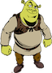

 days when ogres were still the terror of certain districts, there was one who had long kept a whole neighbourhood in fear without any one daring to dispute his tyranny. By thefts and exactions, by heavy ransoms from merchants too old and tough to be eaten, in one way and another, the Ogre had become very rich; and although those who knew could tell of huge cellars full of gold and jewels, and yards and barns groaning with the weight of stolen goods, the richer he grew the more anxious and covetous he became. Moreover, day by day, he added to his stores; for though (like most ogres) he was as stupid as he was strong, no one had ever been found, by force or fraud, to get the better of him.
What he took from the people was not their heaviest grievance. Even to be killed and eaten by him was not the chance they thought of most. A man can die but once; and if he is a sailor, a shark may eat him, which is not so much better than being devoured by an ogre. No, that was not the worst. The worst was this—he would keep getting married. And as he liked little wives, all the short women lived in fear and dread. And as his wives always died very soon, he was constantly courting fresh ones.
Some said he ate his wives; some said he tormented, and others, that he only worked them to death. Everybody knew it was not a desirable match, and yet there was not a father who dare refuse his daughter if she were asked for. The Ogre only cared for two things in a woman—he liked her to be little, and a good housewife.
Now it was when the Ogre had just lost his twenty-fourth wife (within the memory of man) that these two qualities were eminently united in the person of the smallest and most notable woman of the district, the daughter of a certain poor farmer. He was so poor that he could not afford properly to dower his daughter, who had in consequence remained single beyond her first youth. Everybody felt sure that Managing Molly must now be married to the Ogre. The tall girls stretched themselves till they looked like maypoles, and said, "Poor thing!" The slatterns gossiped from house to house, the heels of their shoes clacking as they went, and cried that this was what came of being too thrifty.
And sure enough, in due time, the giant widower came to the farmer as he was in the field looking over his crops, and proposed for Molly there and then. The farmer was so much put out that he did not know what he said in reply, either when he was saying it, or afterwards, when his friends asked about it. But he remembered that the Ogre had invited himself to sup at the farm that day week.
Managing Molly did not distress herself at the news.
"Do what I bid you, and say as I say," said she to her father, "and if the Ogre does not change his mind, at any rate you shall not come empty-handed out of the business."
By his daughter's desire the farmer now procured a large number of hares, and a barrel of white wine, which expenses completely emptied his slender stocking, and on the day of the Ogre's visit, she made a delicious and savoury stew with the hares in the biggest pickling tub, and the wine-barrel was set on a bench near the table.
When the Ogre came, Molly served up the stew, and the Ogre sat down to sup, his head just touching the kitchen rafters. The stew was perfect, and there was plenty of it. For what Molly and her father ate was hardly to be counted in the tubful. The Ogre was very much pleased, and said politely:
"I'm afraid, my dear, that you have been put to great trouble and expense on my account, I have a large appetite, and like to sup well."
"Don't mention it, sir," said Molly. "The fewer rats the more corn. How do you cook them?"
"Not one of all the extravagant hussies I have had as wives ever cooked them at all," said the Ogre; and he thought to himself, "Such a stew out of rats! What frugality! What a housewife!"
When he broached the wine, he was no less pleased, for it was of the best.
"This, at any rate, must have cost you a great deal, neighbour," said he, drinking the farmer's health as Molly left the room.
"I don't know that rotten apples could be better used," said the farmer; "but I leave all that to Molly. Do you brew at home?"
"We give our rotten apples to the pigs," growled the Ogre. "But things will be better ordered when she is my wife."
The Ogre was now in great haste to conclude the match, and asked what dowry the farmer would give his daughter.
"I should never dream of giving a dowry with Molly," said the farmer, boldly. "Whoever gets her, gets dowry enough. On the contrary, I shall expect a good round sum from the man who deprives me of her. Our wealthiest farmer is just widowed, and therefore sure to be in a hurry for marriage. He has an eye to the main chance, and would not grudge to pay well for such a wife, I'll warrant."
"I'm no churl myself," said the Ogre, who was anxious to secure his thrifty bride at any price; and he named a large sum of money, thinking, "We shall live on rats henceforward, and the beef and mutton will soon cover the dowry."
"Double that, and we'll see," said the farmer, stoutly.
But the Ogre became angry, and cried; "What are you thinking of, man? Who is to hinder my carrying your lass off, without 'with your leave' or 'by your leave,' dowry or none?"
"How little you know her!" said the farmer. "She is so firm that she would be cut to pieces sooner than give you any benefit of her thrift, unless you dealt fairly in the matter."
"Well, well," said the Ogre, "let us meet each other." And he named a sum larger than he at first proposed, and less than the farmer had asked. This the farmer agreed to, as it was enough to make him prosperous for life.
"Bring it in a sack to-morrow morning," said he to the Ogre, "and then you can speak to Molly; she's gone to bed now."
The next morning, accordingly, the Ogre appeared, carrying the dowry in a sack, and Molly came to meet him.
"There are two things," said she, "I would ask of any lover of mine: a new farmhouse, built as I should direct, with a view to economy; and a feather-bed of fresh goose feathers, filled when the old woman plucks her geese. If I don't sleep well, I cannot work well."
"That is better than asking for finery," thought the Ogre; "and after all the house will be my own." So, to save the expense of labour, he built it himself, and worked hard, day after day, under Molly's orders, till winter came. Then it was finished.
"Now for the feather-bed," said Molly. "I'll sew up the ticking, and when the old woman plucks her geese, I'll let you know."
When it snows, they say the old woman up yonder is plucking her geese, and so at the first snowstorm Molly sent for the Ogre.
"Now you see the feathers falling," said she, "so fill the bed."
"How am I to catch them?" cried the Ogre.
"Stupid! don't you see them lying there in a heap?" cried Molly; "get a shovel, and set to work."
The Ogre accordingly carried in shovelfuls of snow to the bed, but as it melted as fast as he put it in, his labour never seemed done. Towards night the room got so cold that the snow would not melt, and now the bed was soon filled.
Molly hastily covered it with sheets and blankets, and said: "Pray rest here to-night, and tell me if the bed is not comfort itself. To-morrow we will be married."
So the tired Ogre lay down on the bed he had filled, but, do what he would, he could not get warm.
"The sheets must be damp," said he, and in the morning he woke with such horrible pains in his bones that he could hardly move, and half the bed had melted away. "It's no use," he groaned, "she's a very managing woman, but to sleep on such a bed would be the death of me." And he went off home as quickly as he could, before Managing Molly could call upon him to be married; for she was so managing that he was more than half afraid of her already.
When Molly found that he had gone, she sent the farmer after him.
"What does he want?" cried the Ogre, when they told him the farmer was at the door.
"He says the bride is waiting for you," was the reply.
"Tell him I'm too ill to be married," said the Ogre.
But the messenger soon returned:
"He says she wants to know what you will give her to make up for the disappointment."
"She's got the dowry, and the farm, and the feather-bed," groaned the Ogre; "what more does she want?"
But again the messenger returned:
"She says you've pressed the feather-bed flat, and she wants some more goose feathers."
"There are geese enough in the yard," yelled the Ogre, "Let him drive them home; and if he has another word to say, put him down to roast."
The farmer, who overheard this order, lost no time in taking his leave, and as he passed through the yard he drove home as fine a flock of geese as you will see on a common.
It is said that the Ogre never recovered from the effects of sleeping on the old woman's goose feathers, and was less powerful than before.
As for Managing Molly, being now well dowered, she had no lack of offers of marriage, and was soon mated to her mind.